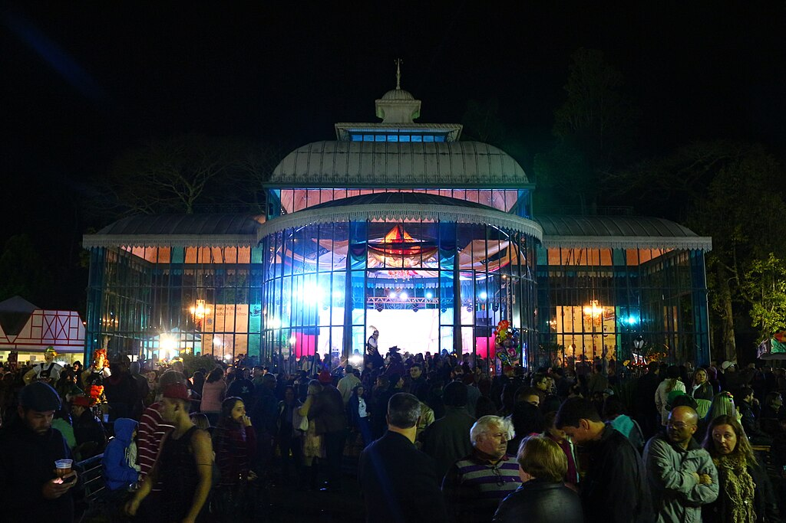
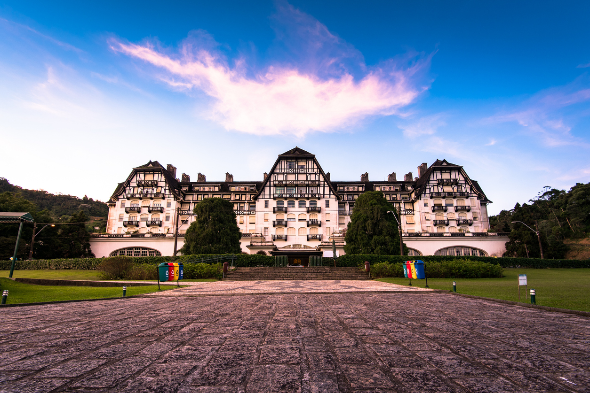
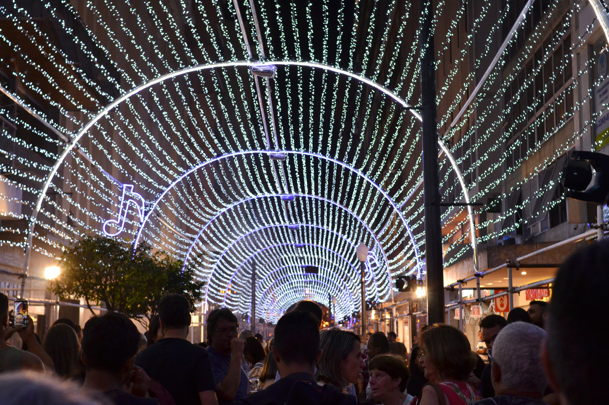
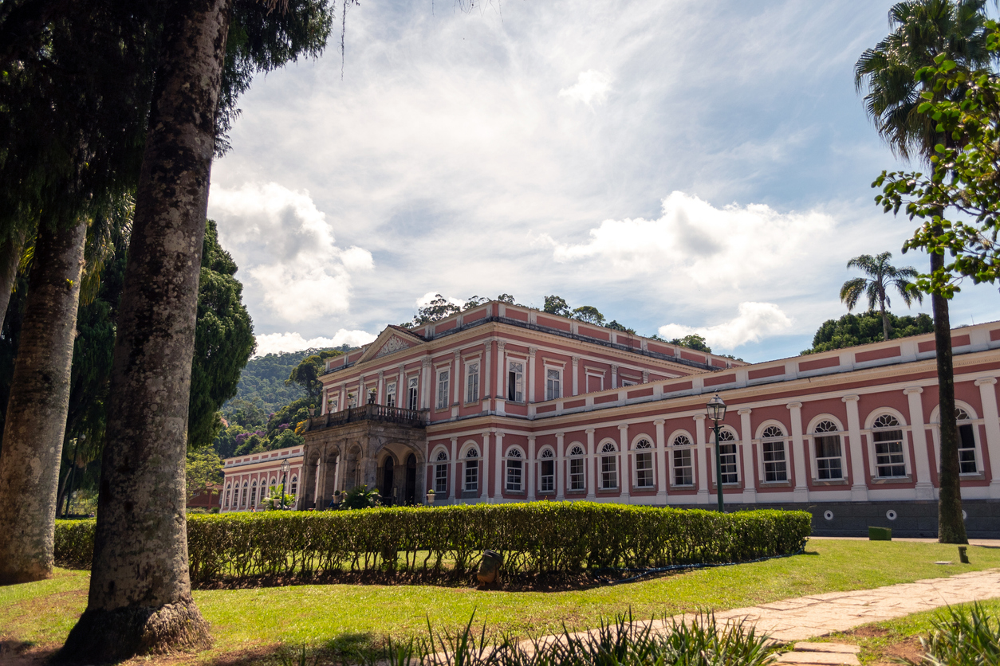
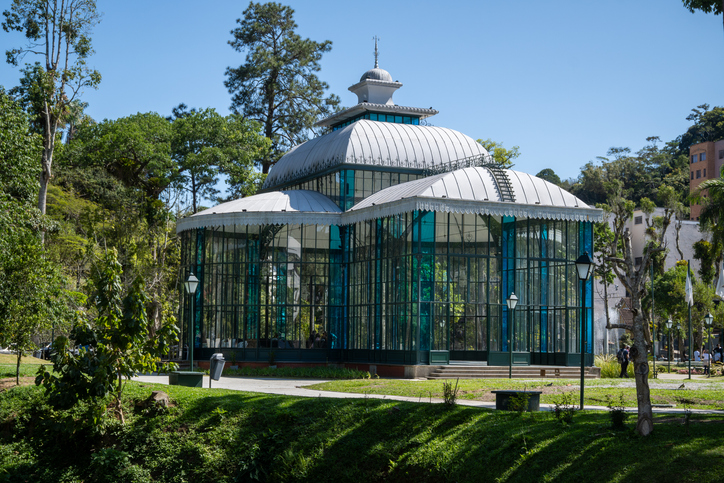
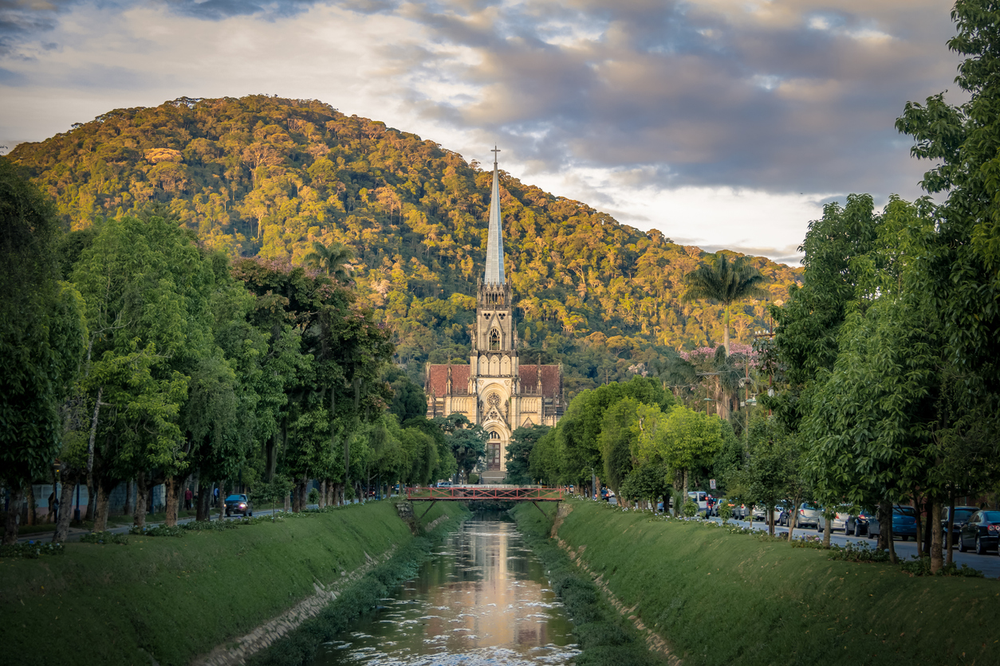

Museu de Cera de Petrópolis– Primeiro museu de cera do Brasil, com estátuas hiper-realistas de personalidades nacionais e internacionais.
Palácio de Cristal– Construção icônica usada para eventos culturais.
Casa de Santos Dumont – Residência do inventor, com objetos históricos e curiosidades.
Palácio Quitandinha – Construído na década de 1940, o palácio já foi um dos maiores cassinos do Brasil e hoje é um centro cultural com exposições e eventos.
Casa da Princesa Isabel– Residência histórica que pertenceu à princesa Isabel, com arquitetura preservada e exposições sobre a monarquia.
Casa de Petrópolis (Casa de Sete Erros) – Casarão do século XIX com arquitetura curiosa e exposições culturais.
Rua Teresa – Região conhecida por suas lojas e restaurantes típicos.
🎭 Eventos mais conhecidos de Petrópolis
Bauernfest – Festa tradicional alemã celebrando a imigração germânica.
Festival do Chocolate – Evento anual dedicado aos amantes de chocolate, com degustações e workshops.
Festival de Inverno – Evento anual com apresentações musicais e culturais.
Natal Imperial – Espetáculos natalinos e decoração especial pela cidade.



Área Leste
Explore a cultura e história da área leste de Petrópolis.
Museu Imperial
Palácio de Cristal
Catedral São Pedro de Alcântara



Área Oeste
Descubra as belezas naturais da área oeste de Petrópolis.